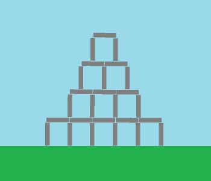
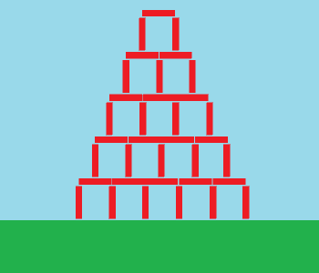
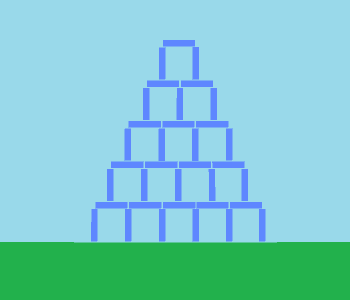
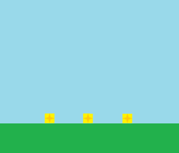

Dimitri Charneux
Développeur Unity
Loos 59120
dimitri.charneux@gmail.com
06.69.17.06.34
Téléchargez le CV ou consultez mon profil LinkedIn
Compétences
C#, Unity
90%
Java
80%
SQL
65%
C++
60%
Blender
55%
Langages
Français
Langue maternelle
Anglais
Technique
Angry Birds like
Objectifs
Apprendre la 2D avec Unity :
- Gestion des Collider2d et Rigidbody2d
- Utilisation des sprites
Démonstration
Vous pouvez télécharger ce projet sur mon github.
Le jeu
Plusieurs type de bloc :
- Les gris sont des blocs normaux, ils sont cassables après plusieurs coups. Ils ne sont pas très lourds et sont soumis à la gravité.
- Les rouges sont des blocs incassables, ils sont fixes et ne sont pas soumis à la gravité.
- Les bleus sont des blocs très fragiles, ils sont cassables en un coup et sont soumis à la gravité.
- Les carrés jaunes sont les objectifs. Ce sont les blocs à détruire pour réussir le niveau. Ils sont un peu plus résistants que les blocs normaux.




Lors d'un tir, nous pouvons cliquer sur l'écran pour l'accélérer la balle une fois.
Avant le premier tir, la caméra parcours le niveau afin de le montrer au joueur.
Des pointillés apparaissent derrière le boulet pour afficher sa dernière trajectoire.